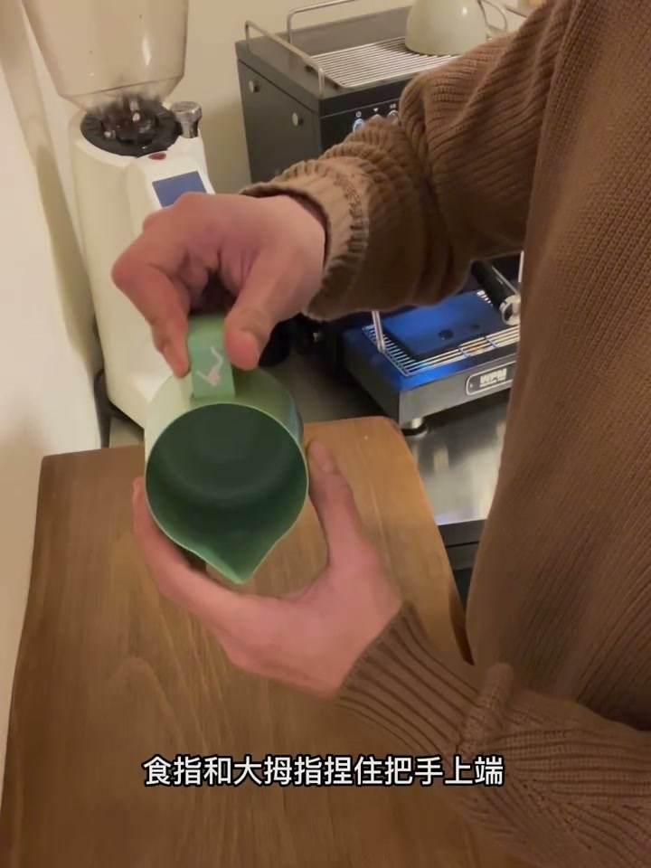
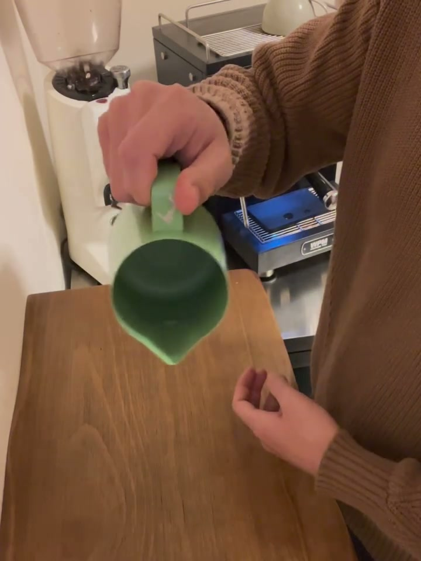
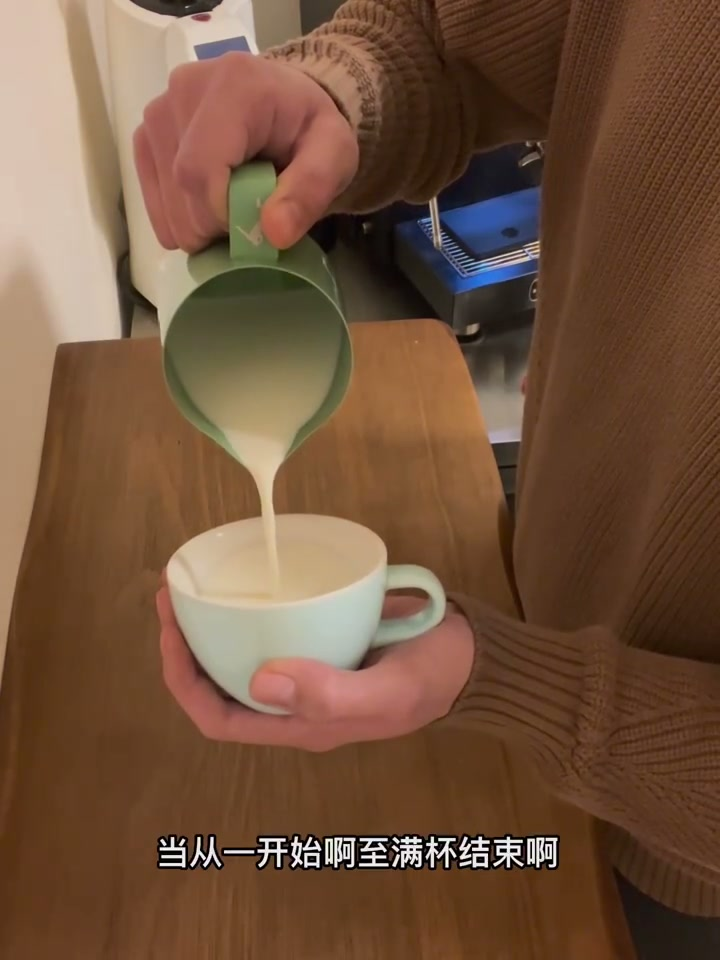
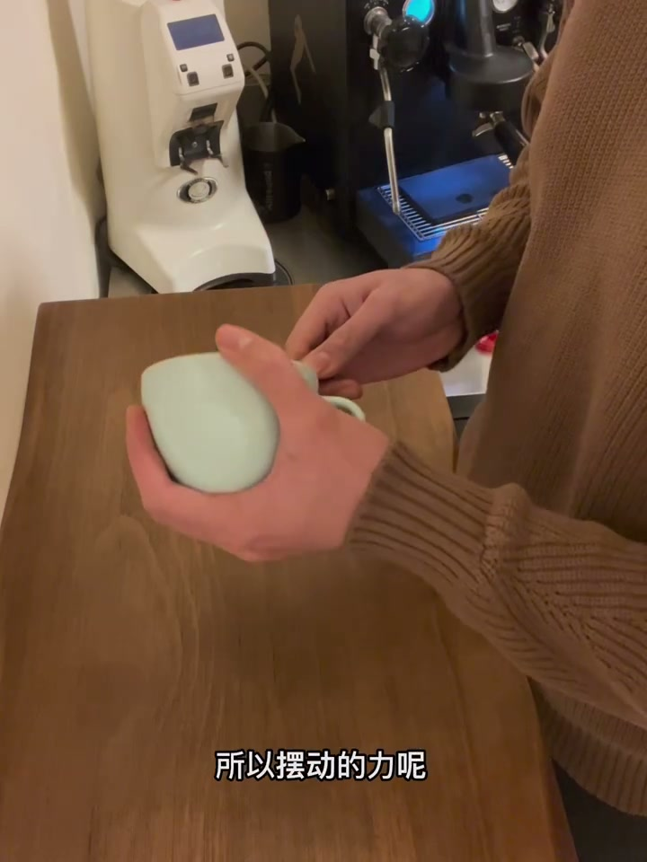
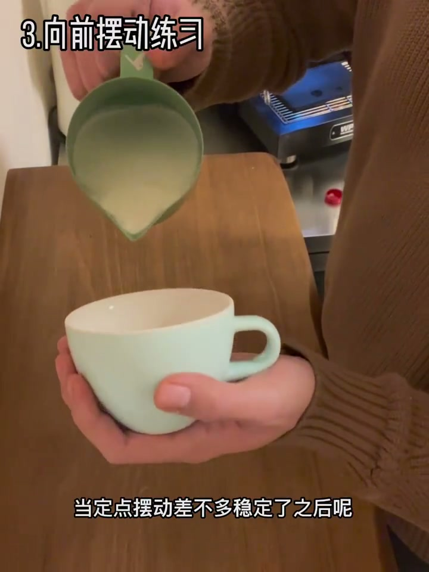

新手咖啡拉花 摆动怎么练？（10分钟详细讲解）
查看原视频视频结构
- 第一部分：两种握缸方式及发力位置
- 第二部分：摆动练习的正确顺序（6步递进）
- 第三部分：摆动不稳定的原因与改善方法
- 附录：手部松紧度 + 流量与摆频的匹配关系
一、握缸与发力（两种方式）
方式1：两指捏缸
- 三根手指握把手，把手抵在手掌心，食指和大拇指捏把手上端
- 手臂抬高约与地面平行，小臂离身体远，大小臂呈90°角
- 发力位置：小臂（以手肘为支点做横向移动）。手腕不发力

方式2：握拳式
- 手掌打开，手柄抵住掌心，手握紧即可
- 手臂不需要抬那么高，手肘收回靠近身体
- 两种发力：①手指发力（中指+无名指，小众）②手腕发力（常用）

二、摆动练习的6步顺序
前提：先掌握稳定的流量控制——从头到尾倒奶流量保持一致。
| 步骤 | 练习内容 | 关键细节 |
|---|---|---|
| 1 | 稳定倒奶 | 流量从开始到满杯保持一致 |
| 2 | 原地定点摆动 | 半缸奶开始，释放流量后加摆动，直到倒完。过程中重量减轻→力要逐渐递增 |
| 3 | 向前走摆动 | 不能只练定点——开底不是死站桩，必须向前移动 |
| 4 | 定点+向前组合 | 两步连起来就是前增心（压纹基本功图案） |
| 5 | 向后退摆动 | 单独练——前进和后退感受完全不同，刚接触会让你怀疑人生 |
| 6 | 定点+前+后组合 | 就是树叶拉花。先别着急空心叶小圆叶，稳扎稳打做好一种节奏 |

三、定点摆动两个常见问题
问题1：线条不连续、断断续续 → 当前流量下摆动频率太慢
解决：①加大流量 或 ②加快摆动频率（二选一，不要同时改）

问题2：摆动不稳定、线条抖动 → 摆动频率太快
解决：降低摆动频率 + 手臂手腕放松。手紧张的状态下不可能稳定摆动。
四、三个关键细节
手部松紧度：完全放松→缸晃动失控；过于紧张→僵硬卡壳；稍微放松→稳定且流畅。

流量-摆频匹配：
| 模式 | 流量 | 摆频 | 匹配？ |
|---|---|---|---|
| A | 小 | 快 | ✅ 正常 |
| B | 大 | 慢 | ✅ 正常 |
| C | 流量不变→加大 | 不变 | ❌ 液体在缸内产生乱流 |
| D | 流量不变→减小 | 不变 | ❌ 牛奶甩不起来，线条不够妖娆 |
核心规律：小流量→快摆频，大流量→慢摆频。流量和摆频只能改一个来调整
五柄缸建议：如果摆动练了很久还是不稳定，试试五柄缸。直接握住缸体能更直观感受液体变化。
完整文字转录（226段）
以下内容按 Whisper 原始分段完整呈现，可能包含识别误差。
- [00:00]哈喽兄弟们好
- [00:03]今天呢来分享一下关于摆动的技巧
- [00:06]视频呢分为以下三个部分
- [00:08]第一两种握钢以及发力位置
- [00:11]第二刚接触摆动该怎么有顺序的进行练习
- [00:14]第三摆动不稳定怎么进行改善
- [00:17]本期视频呢比较长
- [00:20]不过我相信耐心看完或多或少都会有所帮助
- [00:22]好那我们接下来开始进入正题
- [00:25]我们先来说第一种最常见的
- [00:28]两指捏钢
- [00:31]三根手指呢握住钢的把手
- [00:34]把手抵在手掌心
- [00:36]十指和大拇指捏住把手上端
- [00:39]然后呢也有把十指收回
- [00:42]就像视频中这样捏钢也是没有任何问题的
- [00:45]然后我们可能有时候也会看到
- [00:48]有人捏钢呢他捏的不是在上端
- [00:50]他可能靠后一些
- [00:53]这个是因为可能钢比较大手比较小造成的
- [00:56]所以说这种也是没有问题的
- [00:59]接下来我们要抬高并打开手臂
- [01:02]手臂呢约与地面平行
- [01:04]这里解释一下什么是打开手臂
- [01:07]打开手臂指的是小臂离身体的距离远一些
- [01:10]小臂与大臂呢呈90度的一个角
- [01:13]然后我们右手根据拉钢的高度来拿杯子就可以了
- [01:16]那么接下来呢我们来说摆动的时候发力的位置
- [01:18]我们摆动师发力的位置呢是小臂
- [01:21]手腕呢是不发力的
- [01:24]我们以手肘呢作为支点
- [01:27]然后做一个横向的移动
- [01:30]如果把我们平时摆动放大了看
- [01:32]其实就像视频中这样
- [01:35]但是并没有这么夸张
- [01:38]这样呢方便理解
- [01:41]那这个呢是我们正常状态下的摆动
- [01:44]很难看出这个手臂在动对吧
- [01:46]因为看起来更像是手指在发力
- [01:49]好那我们接下来说另一种握钢方式
- [01:52]这种握钢呢我把它称之为握拳师
- [01:55]我们首先呢把手掌打开
- [01:58]手柄底在掌心
- [02:00]然后把我们的手握紧就可以了
- [02:03]那这种握钢呢我们的手臂呢就不需要再抬那么高了
- [02:06]我们可以把手肘收回
- [02:09]靠近身体就可以了
- [02:12]然后我们同样根据右手拉花钢的高度来拿咖啡杯
- [02:14]那这种握钢呢目前我知道两种发力位置
- [02:17]第一种呢就是手指发力
- [02:20]用我们的中指和无名指去进行发力
- [02:23]手腕呢是保持不动的
- [02:26]这种发力方式呢并不是我个人常用的
- [02:28]是我之前看到过一个大神分享的视频
- [02:31]后来我试验了一下
- [02:34]觉得也还不错
- [02:37]但是我觉得还是比较小众的
- [02:40]那我们接着说第二种发力方式
- [02:42]手腕发力
- [02:45]然后呢我们手指呢就不需要再发力了
- [02:48]只有手腕保持发力就可以了
- [02:51]从视频中呢我们也可以看得出来
- [02:54]手腕是有明显在动的
- [02:56]跟刚才手指发力呢是不一样的
- [02:59]对吧
- [03:02]好
- [03:05]那么两种握钢方式和发力位置讲完了
- [03:08]那我们接下来说一下
- [03:10]摆动练习的顺序
- [03:13]摆动练习的前提是什么
- [03:16]是我们要对流量呢有一个稳定的控制
- [03:19]因为如果流量释放的不够稳定
- [03:22]会直接影响到我们摆动的稳定性
- [03:24]所以第一步呢我们先从稳定的倒奶开始
- [03:27]当从一开始到至满杯结束
- [03:30]流量呢基本都可以保持一致的情况下
- [03:33]我们呢就可以开始进行第二步
- [03:36]原地摆动练习
- [03:38]这里说一下平时练习呢我们到半缸左右的牛奶呢就可以了
- [03:41]我们先开始释放流量
- [03:44]当流量稳定以后呢加上摆动
- [03:47]一直摆动到满杯
- [03:50]然后这里呢有一个细节就是我们练习的时候呢
- [03:52]一定要从半缸左右的牛奶呢进行练习
- [03:55]直到牛奶几乎全部倒完
- [03:58]因为我们奶缸中的奶在逐渐减少的时候
- [04:01]拉花缸的整体重量也在逐渐变轻
- [04:04]那我们想要保持稳定
- [04:06]就需要通过加大摆动的力
- [04:09]所以摆动的力呢从开始到结束是一个逐渐低增的过程
- [04:12]但是呢是细微的变化要多去感受
- [04:15]接下来我们感受一下元素的定点摆动
- [04:18]定点稳定摆动对于刚接触的新手来说呢
- [04:20]确实不容易
- [04:23]我们也不用指望短期呢就可以练会
- [04:26]这是一个长期稳定练习的结果
- [04:29]那么这里呢分享两个定点摆动常见的问题
- [04:32]希望呢能有所帮助
- [04:34]好我们先来看第一种情况
- [04:37]左边这一杯呢是错误的
- [04:40]右边呢是正确的摆动
- [04:43]那么左边这一杯是什么情况导致的呢
- [04:46]是因为在当前这个流量释放下
- [04:48]摆动的频率呢过慢了
- [04:51]那要怎么改变呢
- [04:54]一共有两种办法
- [04:57]第一种呢就是加大流量
- [05:00]第二种呢就是加快摆动频率
- [05:02]其实实际上摆动频率比较快
- [05:05]因为摆动频率比较快
- [05:08]所以摆动频率比较快
- [05:11]第二种呢就是加快摆动频率
- [05:14]其实视频右边的这一杯呢
- [05:17]就是加快摆动频率后的结果
- [05:19]这里要切记流量和摆频呢
- [05:22]改变一个就好
- [05:25]接下来呢我们看第二种情况
- [05:28]同样呢左边这杯呢是有问题的
- [05:31]他的摆动不够稳定
- [05:33]那么右边呢是正确的
- [05:36]那么左边这杯是什么原因导致的呢
- [05:39]这个是因为摆动的频率太快了
- [05:42]对于新手来说呢很难去掌握
- [05:45]所以呢我们要把摆动频率降低一些
- [05:47]并且手腕和手臂呢要放松一些
- [05:50]如果摆动的时候
- [05:53]手臂或者手腕特别紧张的状态下
- [05:56]是几乎不可能做到稳定的摆动的
- [05:59]那么我们继续下面的练习
- [06:01]当定点摆动差不多稳定了之后呢
- [06:04]我们可以练习向前走摆动
- [06:07]压弯图案的开底呢并不是无脑的定点摆动
- [06:10]所以我们死练定点摆动是没有意义的
- [06:13]我见过很多新手呢定点摆动呢稳的一匹
- [06:15]但是一向前走呢稀碎
- [06:18]这样呢是没有办法把图案做好的
- [06:21]当向前走摆动练得差不多了
- [06:24]我们就把定点摆动和向前走摆动连在一起
- [06:27]就变成了压弯基本功图案前增心
- [06:29]练习到这儿的时候呢
- [06:32]我们就可以去尝试做前增心了
- [06:35]因为只有在做图的时候呢
- [06:38]才能让我们更好的去发现自己的问题所在
- [06:41]并且呢加以改正
- [06:43]这样就可以不断进步了
- [06:46]好那当我们定点加向前摆动都没有问题了
- [06:49]恭喜你前增心的摆动呢你基本不会有问题了
- [06:52]那么还有一个难点在等着我们
- [06:55]那就是向后退摆动
- [06:57]虽然前进和后退都是在拉滑钢移动时进行的稳定摆动
- [07:00]但是刚接触后退摆动时仍旧会让你怀疑人生
- [07:03]那么我们还是把它单独拿出来练一下
- [07:06]当我们单独后退摆动也练习的差不多了
- [07:09]那我们就进行最后一项
- [07:11]定点加向前加向后摆动
- [07:14]说白了呢就是树叶拉花
- [07:17]练习到这里的时候呢可能有些新手呢
- [07:20]还是喜欢空心叶小圆叶之类的
- [07:23]我劝你冷静
- [07:25]先不要考虑节奏的变化
- [07:28]我们稳扎稳打
- [07:31]先把一种节奏做好
- [07:34]之后呢那些都不是问题
- [07:37]我相信你一定可以做到
- [07:39]那么我们基础的摆动练习呢到这里就告一段落了
- [07:42]之后呢还会有一些节奏变化
- [07:45]慢摆之类的
- [07:48]那么关于这些呢以后有机会
- [07:51]我会在录视频分享给大家
- [07:53]我们最后呢再来聊几个关于新手摆动的细节
- [07:56]我们来看一下手在握钢时紧张或者放松的状态下
- [07:59]摆动时拉花钢会有什么样的变化
- [08:02]现在是手完全放松的状态下
- [08:05]可以看刚晃动的呢有些抽象
- [08:07]这种情况呢是不可能做好摆动的
- [08:10]那然后我们再来看手特别紧张的握紧拉花钢
- [08:13]那这时候呢摆动是没有问题的
- [08:16]但是呢由于过于僵硬
- [08:19]对于新手来说呢这样做摆动很容易卡壳
- [08:21]不够流畅
- [08:24]那么最后呢是手稍微放松的状态下
- [08:27]那这时候呢可以让拉花钢进行一个稳定且流畅的摆动
- [08:30]关于这个放松和紧张呢
- [08:33]大家可以自己去感受一下
- [08:35]应该就可以体会到了
- [08:38]我们接下来看一下
- [08:41]释放流量的大小与摆动频率之间呢有哪些关联
- [08:44]先来看一下正常情况下
- [08:47]小流量与快摆动
- [08:49]那这时候呢摆动呢是没有问题的
- [08:52]那我们记住现在这个流量
- [08:55]一会儿呢我们看一下当摆动频率保持不变的时候
- [08:58]流量释放加大一倍或者两倍会产生什么样的结果呢
- [09:01]这个时候呢我们可以看到液体呢在钢内产生了乱流
- [09:03]摆动出来的线条呢也不像之前那么妖娆了
- [09:06]这就是流量释放与摆动频率之间不匹配了
- [09:09]那如果发生这种情况呢
- [09:12]我们就要减小流量或者是降低摆动频率
- [09:15]改变一个就可以了
- [09:17]我们继续看第二种情况
- [09:20]这一杯呢是大流量与慢摆动
- [09:23]然后这个摆动呢也是没问题的
- [09:26]那我们还是记住这个流量释放
- [09:29]那一会儿我们再来看一下当摆动频率保持不变
- [09:31]那流量减少一倍或者两倍会产生什么样的结果
- [09:34]那这时候呢我们可以看到牛奶流出来以后呢
- [09:37]并没有像之前那么妖娆
- [09:40]那也就是也就是说人话就是没有甩起来
- [09:43]那这是流量与摆动频率呢不匹配了
- [09:45]那这个时候应该怎么办呢
- [09:48]我们应该加大流量或者加快摆动频率
- [09:51]那么最后我们总结下来就是呢
- [09:54]小流量呢我们要对应快的摆动频率
- [09:57]那么大流量呢对于慢的摆动频率
- [09:59]如果你的摆动练了很久
- [10:02]仍旧无法稳定呢
- [10:05]不妨呢可以去试试五柄钢
- [10:08]因为不同于油柄钢
- [10:11]五柄钢我们可以直接握住钢体
- [10:13]这样呢可以更直观的感受钢内液体的变化
- [10:16]或许呢会有所改善
- [10:19]摆动呢不是一朝一夕就能够稳定的
- [10:22]所以呢理论看的再多不练等于零
- [10:25]兄弟们加油练习
- [10:27]本期视频呢到这里就全部结束了
- [10:30]我们下期再见